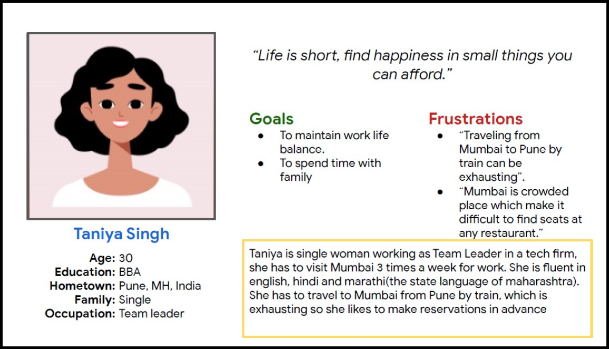

Duration
March 2021 - May 2021
UX research / mobile app / table reservation
Mumbai Cafe is a mobile app concept for a cafe in Mumbai that serves coffee, speciality chai, and healthy side dishes. The app focuses on helping students and working adults quickly reserve a table, especially during busy hours.

March 2021 - May 2021
UX designer responsible for the app from conception to delivery.
Design an app that allows users to easily reserve a table at Mumbai Cafe.
Mumbai Cafe targets students and workers who want to get a quick bite, host a party, or hold a meeting. The product direction centered on making table reservations quick and reliable.
During peak hours, it gets hard to find a table at cafes in the area, which can cost customers valuable time.
Conducting interviews, paper and digital wireframing, low- and high-fidelity prototyping, usability studies, accessibility considerations, and design iteration.
I conducted interviews and created empathy maps to understand the users I was designing for and their needs. A primary user group identified through research was working adults with busy schedules.
This group was generally short on time. During peak hours, it was difficult for them to find a table at any cafe. Sometimes they had to leave because the cafe was packed.
Table-booking platforms are not always equipped with assistive technology.
Working adults are too busy to spend time looking for a vacant table.
Text-heavy menus in apps are often difficult to read and order from.
Taniya is a busy working adult who needs an easy way to reserve a table at a cafe because she has no time to waste visiting a cafe only to find that no tables are available.

Mapping Taniya's user journey revealed how helpful it would be for users to have access to a dedicated Mumbai Cafe app for reserving a table.

Drafting iterations of each screen helped ensure that the elements moving into digital wireframes were suited to user pain points. For the home screen, I prioritized a quick and easy booking process to help users save time.

As the initial design phase continued, I based screen designs on feedback and findings from user research.

Easy navigation was a key user need, along with making the app work better with assistive technologies.

The low-fidelity prototype connected the primary user flow for reserving a table, so the prototype could be used in a usability study with users. View the low-fidelity prototype.

Unmoderated usability study
India, remote
4 participants
20-25 minutes
Usability studies produced actionable insights. One important change was adding separate pages for information within the app's reservation process to help users move through booking more clearly.


The high-fidelity prototype followed the same reserve-table user flow as the low-fidelity prototype and included the design changes made after the usability study. View the high-fidelity prototype.

The app makes users feel like Mumbai Cafe thinks about how to meet their needs.
"The app made it so easy to reserve table at the Mumbai Cafe, I would definitely use this app to secure my table at the cafe."
While designing the Mumbai Cafe app, I learned that the first ideas are only the beginning of the process. Usability studies and peer feedback influenced each iteration of the app's designs.